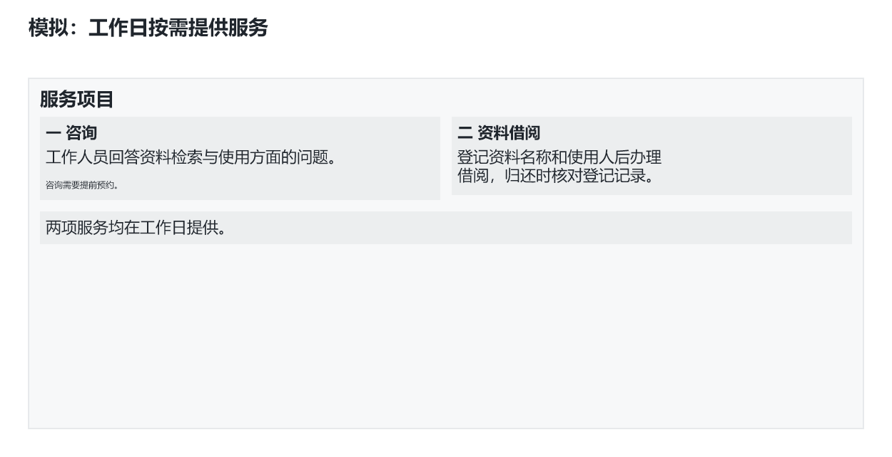
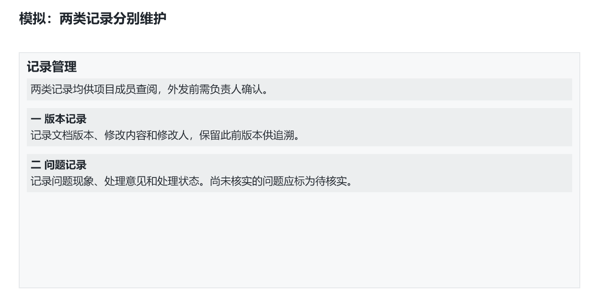

<!doctype html><html lang="zh-CN"><meta charset="utf-8"><title>灰稿逐页预览</title><style>body{margin:32px auto;max-width:1280px;padding:0 24px;background:#f3f4f5;color:#20262d;font-family:system-ui}header{position:sticky;top:0;background:#f3f4f5;padding:12px 0}a{color:#17689a}figure{margin:32px 0}img{max-width:100%;height:auto;background:white;border:1px solid #ccd1d5}figcaption{margin:8px 0}</style><header><b>自定义内容区 · 1170 × 492 · 2页</b>　<a href="gray-draft.pptx">下载可编辑 PPT</a><p>灰稿候选，等待用户审阅。灰区为实文，浅蓝区为制作说明。</p></header><figure id="page-1"><figcaption>1 / 2　模拟服务安排</figcaption></figure><figure id="page-2"><figcaption>2 / 2　模拟记录要求</figcaption></figure></html>